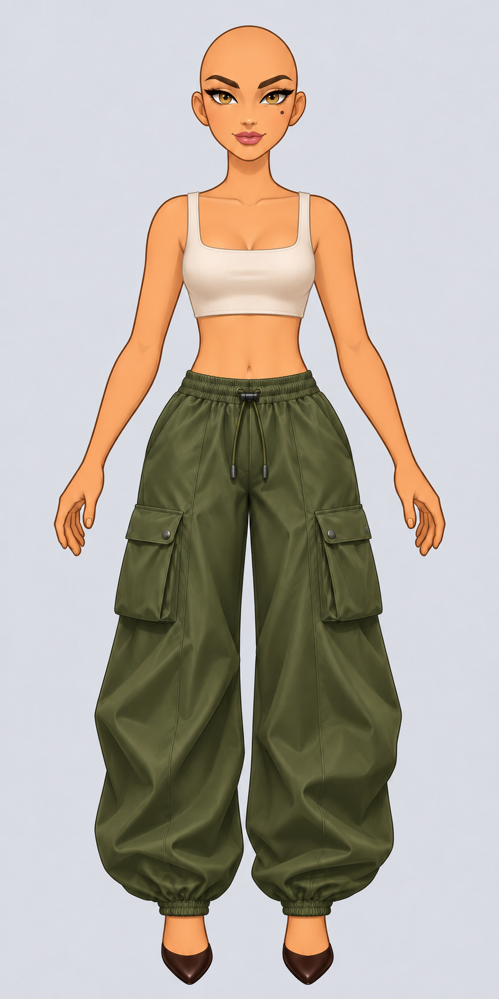
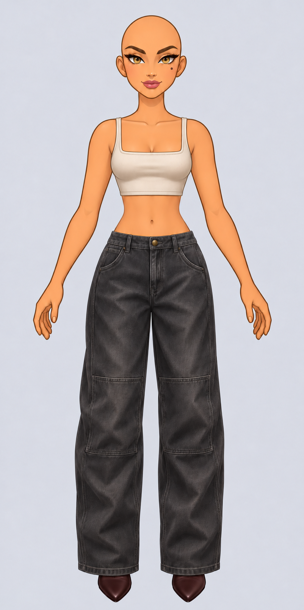
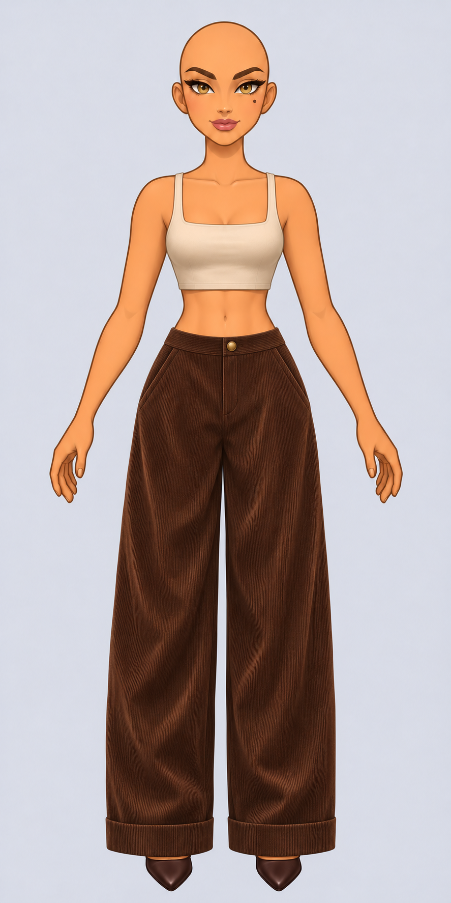

Un petit monde · Atelier d’Iris
Deux retouches, un nouveau modèle
Iris de face. Clique sur une silhouette pour ouvrir la vue en pleine résolution.




05 · Vélin
Un nouveau pantalon droit et ample en velours côtelé chocolat, avec de larges revers.
Voir Sablon, le modèle remplacé